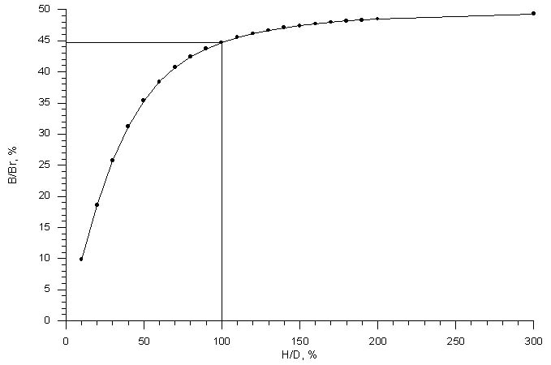

Расчет оптимальной высоты
цилиндрического
(призматического) магнита по критерию достижения максимума
магнитной индукции на поверхности основания
Постановка задачи
В некоторых типах магнитных систем (например, магнитных сепараторах) необходимо получить как можно большую величину магнитной индукции на поверхности магнитной системы, представляющей из себя, по сути, цилиндрический или призматический магнит. С увеличением высоты такого магнита магнитная индукция в центре основания растет, в пределе теоретически приближаясь к половине остаточной индукции материала, из которого сделан магнит. Поэтому возникает задача оптимизации высоты магнита, чтобы не расходовать излишнее количество материала и сократить производственные издержки.
Постоянный магнит с аксиальным направлением намагниченности, в частности, цилиндрический или призматический, можно рассматривать как однослойный соленоид с бесконечно тонкой обмоткой, геометрически соответствующей боковой поверхности магнита, по которой течет намагничивающий ток [2]. Условием эквивалентности магнита и соленоида является равенство их магнитных моментов. Метод эквивалентного соленоида положен в основу программы A_Magnet [1], которая позволяет рассчитывать индукцию магнитного поля цилиндрического магнита, сделанного из материала с прямоугольной петлей гистерезиса (феррит бария, феррит стронция, неодим-железо-бор, самарий-кобальт и т. п.).
Расчеты
В таблице и на рис. 1 в относительных единицах представлен результат расчета с помощью программы A_Magnet зависимости магнитной индукции в центре основания цилиндрического магнита от его высоты. Здесь B - магнитная индукция в центре основания, Br - остаточная индукция материала, H - высота цилиндра, D - диаметр цилиндра.
| H/D, % | 10 | 20 | 30 | 40 | 50 | 60 | 70 | 80 | 90 | 100 | 110 | 120 | 130 | 140 | 150 | 160 | 170 | 180 | 190 | 200 | 300 | |
| B/Br, % | 9.81 | 18.57 | 25.72 | 31.23 | 35.36 | 38.41 | 40.69 | 42.40 | 43.71 | 44.72 | 45.52 | 46.15 | 46.67 | 47.09 | 47.43 | 47.72 | 47.97 | 48.18 | 48.35 | 48.51 | 49.32 |

Рис. 1. Зависимость магнитной индукции в центре основания цилиндрического магнита от его высоты (в относительных единицах).
По результатам расчетов видно, что магнитная индукция в центре основания цилиндрического магнита существенно увеличивается до тех пор, пока высота цилиндра не становится равной его диаметру. При этом величина магнитной индукции составляет ~45 % от остаточной индукции материала, из которого сделан магнит. Дальнейший прирост не превысит 10 % от достигнутого, даже если высоту магнита увеличивать бесконечно. Аналогичный вывод справедлив и для призматического магнита (вместо диаметра, как для случая цилиндрического магнита, следует рассматривать величину, равную (4S/p)1/2 , где S - площадь основания призмы, p ≈ 3.1415926).
Измерения
Для проверки расчетов использованы постоянные магниты состава самарий-кобальт (типоразмеры Д15 х 5 и П20 х 20 х 5) и феррит бария (типоразмер П84 х 64 х 14). Из магнитов набирались цилиндр или призма переменной высоты. На каждом этапе установки очередного магнита (который устанавливался под нижнее основание) проводилось измерение магнитной индукции в центре верхнего основания цилиндра или призмы с помощью тесламетра [3].
1. Самарий-кобальт Д15 х 5 (цилиндры диаметром 15 и высотой 5 мм):
| H, мм | 5 | 10 | 15 | 20 | 25 |
| B, мТл | 240 | 330 | 370 | 390 | 400 |
Вывод: можно ограничиться высотой цилиндра H = 15 мм.
2. Самарий-кобальт П20 х 20 х 5 (призмы с квадратным основанием 20 х 20 мм2 и высотой 5 мм):
| H, мм | 5 | 10 | 15 | 20 | 25 | 30 |
| B, мТл | 150 | 280 | 330 | 360 | 370 | 380 |
Вывод: можно ограничиться высотой призмы H = 20 (максимум 25) мм.
3. Феррит бария П84 х 64 х 14 (призмы с квадратным основанием 84 х 64 мм2 и высотой 14 мм):
| H, мм | 14 | 28 | 42 | 56 | 70 | 84 | 98 | 112 |
| B, мТл | 40 | 70 | 92 | 105 | 115 | 120 | 125 | 130 |
Вывод: можно ограничиться высотой призмы H = 84 (максимум 98) мм. Следует заметить, что у призмы, набранной из намагниченных магнитов по отдельности, магнитная индукция в центре основания примерно на 10 мТл меньше, чем у призмы, намагниченной целиком в установке намагничивания [4].
Таким образом, проведенные измерения вполне подтверждают результаты сделанных расчетов.
Ссылки:
27.04.2006
12.03.2007
Альтернативные источники
энергии
Компьютеры и
Интернет
Магнитные поля
Механотронные системы
Перспективные
разработки
Электроника и
технология